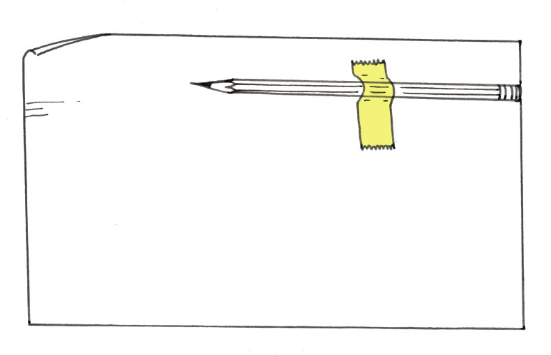

<div class="container">
  <div id="contents" class="col-md-12 main-content"><h1 xmlns="http://www.w3.org/1999/xhtml" id="toc-id-8">Things to consider</h1>

    <b xmlns="http://www.w3.org/1999/xhtml">design issues</b>.
    Design issues are things to think of when something like a
    cellphone tower, bridge, building or power station is designed.
    They include the purposes of the object or structure, the cost,
    and how people and the environment will be affected.
<figcaption xmlns="http://www.w3.org/1999/xhtml">Figure 1</figcaption>

<figcaption xmlns="http://www.w3.org/1999/xhtml">Figure 2</figcaption>
<li xmlns="http://www.w3.org/1999/xhtml">
    <p class="x--Body-investigation-hanging"> Why do you think
    tower A was designed to look like a tree?</p><hr/></li>
    <li xmlns="http://www.w3.org/1999/xhtml">
    <p class="x--Body-investigation-hanging"> Why does tower C
    have cables, but tower D has no cables?</p><hr/></li>
    <li xmlns="http://www.w3.org/1999/xhtml"><p class="x--Body-investigation-hanging"> Why will tower A
    not topple over and fall, even when the wind is strong?</p><hr/></li>
    <li xmlns="http://www.w3.org/1999/xhtml"><p class="x--Body-investigation-hanging"> Why does tower D
    have a large concrete block at the bottom, but tower E hasno
    foundation?</p><hr/></li><p xmlns="http://www.w3.org/1999/xhtml">When an ugly object stands in a beautiful environment, people say the object 
	causes <b>visual pollution</b>.</p>
	<p xmlns="http://www.w3.org/1999/xhtml"> When an object falls over easily, people say it is <b>unstable</b>.</p>
	<p xmlns="http://www.w3.org/1999/xhtml"> The lower part of an object like a tower, on which it stands, is called the 
	<b>base</b>.</p>
    <li xmlns="http://www.w3.org/1999/xhtml" value="5">
    <p class="x--Body-investigation-hanging"> Which of the towers
    on the previous page has the widest base? Why was it designed
    to have such a wide base?</p><hr/></li>
    <li xmlns="http://www.w3.org/1999/xhtml"><p class="x--Body-investigation-hanging"> Which of the towers
    do you think is most unstable? Why do you think so?</p><hr/></li>
    
    <figcaption xmlns="http://www.w3.org/1999/xhtml">Figure 3</figcaption>
    <li xmlns="http://www.w3.org/1999/xhtml">

    <p class="x--Body-investigation-hanging--1-3-"> Try to make
    the tube stand upright on one end. Try this at both ends. What
    do you notice?</p><hr/></li><p xmlns="http://www.w3.org/1999/xhtml"> When most of the weight of an object is in its lower
	part, engineers say it has a <b>low centre of gravity</b>.</p>
	<p xmlns="http://www.w3.org/1999/xhtml"> When most of the weight of an object is in its upper
	part, engineers say it has a <b>high centre of gravity</b>.</p>

    <li xmlns="http://www.w3.org/1999/xhtml" value="2"><p class="x--Body-investigation-hanging"> What is more
    stable: an object with a low centre ofgravity or an object with
    a high centre of gravity?</p><hr/></li>
    <li xmlns="http://www.w3.org/1999/xhtml"><p class="x--Body-investigation-hanging"> Which tower on page
    146 has the highest centre of gravity?</p><hr/></li>
<figcaption xmlns="http://www.w3.org/1999/xhtml">Figure 4</figcaption><hr xmlns="http://www.w3.org/1999/xhtml"/><p xmlns="http://www.w3.org/1999/xhtml" class="x--Body-Text para-style-override-9">The following are
    different ways to prevent towers from falling over easily:</p><ul xmlns="http://www.w3.org/1999/xhtml"><li class="x--Body-text-bullet">Make the
        centre of gravity low. One way of doing this is to connect
        the tower to a heavy object at its bottom.</li>

        <li class="x--Body-text-bullet">Fasten
        the tower to the ground with cables.</li>

        <li class="x--Body-text-bullet">Plant
        the tower deep in the ground.</li>

        <li class="x--Body-text-bullet"> Give the
        tower a wide base.</li>
      </ul><li xmlns="http://www.w3.org/1999/xhtml" value="4"><p class="x--Body-investigation-hanging"> Look at the
    sketches of the six towers again. For each tower, say which
    method or combination of methods was used to make it
    stable.</p><hr/></li>
    <li xmlns="http://www.w3.org/1999/xhtml"><p class="x--Body-investigation-hanging"> Strong foundations
    help to keep towers from falling over. Which towers have
    foundations under ground level to keep them stable?</p><hr/></li>
    <li xmlns="http://www.w3.org/1999/xhtml"><p class="x--Body-investigation-hanging"> How do the
    underground foundations differ from each other?</p><hr/></li>
    <li xmlns="http://www.w3.org/1999/xhtml"><p class="x--Body-investigation-hanging">Some of the towers
    are built from solid concrete or fibre glass. Other towers are
    metal structures. Why do you think the metal towers have
    triangles in them?</p><hr/></li> <i xmlns="http://www.w3.org/1999/xhtml">"I want someone to write a document
    about the new cellphone tower. The document will be given to
    the engineers who will design and build the cellphone tower.
    When they read it, it must be clear what we want. Can you write
    that document?"</i><i xmlns="http://www.w3.org/1999/xhtml">"You will need more information before
    you can write the document. To find that information, you have
    to ask questions. Which questions will you ask me and other
    people in the community?"</i><li xmlns="http://www.w3.org/1999/xhtml">
    <p class="x--Body-investigation-hanging para-style-override-1">
    Now examine your desk and think about how you want the new
    desks to be made. Write notes in the space below, and make a
    few free-hand sketches too.</p> </li><div xmlns="http://www.w3.org/1999/xhtml" class="Basic-Text-Frame"></div>  <b xmlns="http://www.w3.org/1999/xhtml">design
    brief</b> and the answers to your questions are called
    <b xmlns="http://www.w3.org/1999/xhtml">specifications</b>.<li xmlns="http://www.w3.org/1999/xhtml" value="2">
    <p class="x--Body-investigation-hanging"> Write the document
    that will be sent to the factory manager on a loose sheet of
    paper. Your document should include one or more drawings. State
    the dimensions of the school desk.</p></li>

	<li xmlns="http://www.w3.org/1999/xhtml">
    <p class="x--Body-investigation-hanging"> Make a 3D oblique
    drawing in the space below of the desk you want to be made.</p></li><li xmlns="http://www.w3.org/1999/xhtml">
    <p class="x--Body-investigation-hanging--1-3-"> Does your
    document say if the legs of the desk should be made of wood,
    metal or plastic?</p></li><p xmlns="http://www.w3.org/1999/xhtml" class="Body-box-no-indent">Instead of evaluating your
      own document, you can evaluate someone else's document. Your
      teacher could arrange this.</p>
    <li xmlns="http://www.w3.org/1999/xhtml" value="2">
    <p class="x--Body-investigation-hanging"> Does your document
    say how wide the desk top should be?</p><hr/></li>
    <li xmlns="http://www.w3.org/1999/xhtml"><p class="x--Body-investigation-hanging"> Does your document
    say how high above the ground the desk top should be?</p><hr/></li>
    <li xmlns="http://www.w3.org/1999/xhtml"><p class="x--Body-investigation-hanging"> Does your document
    say how smooth or rough the surface of the desk top should
    be?</p><hr/></li><li xmlns="http://www.w3.org/1999/xhtml" value="5"><p class="x--Body-investigation-hanging para-style-override-1">
     Rewrite your design brief with specifications in the space
    below and on the following page. Include a single vanishing
    point perspective drawing.</p></li> <div xmlns="http://www.w3.org/1999/xhtml" class="Basic-Text-Frame"></div>  <div xmlns="http://www.w3.org/1999/xhtml" class="Basic-Text-Frame"></div>  <div xmlns="http://www.w3.org/1999/xhtml" class="Basic-Text-Frame"></div>   

    <figcaption xmlns="http://www.w3.org/1999/xhtml">Figure 5</figcaption>
    
  </div>
</div>